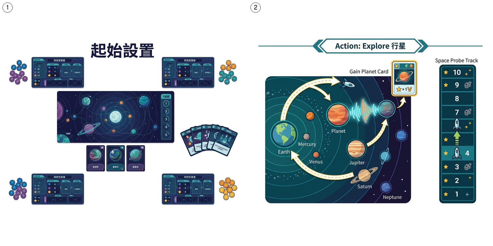

玩家扮演科學家搜尋外星文明, 透過發射訊號同分析回應賺分。策略 + 中重歐, 5 round, 中高難度。2024 年 Kennerspiel des Jahres 候選。1-4 人友善, 單人 mode 都有。教學 30 min, 一局 90-120 min。
為咩好玩: 🎲 搜尋外星文明嘅中重歐

玩家扮演科學家搜尋外星文明, 透過發射訊號同分析回應賺分。策略 + 中重歐, 5 round, 中高難度。2024 年 Kennerspiel des Jahres 候選。1-4 人友善, 單人 mode 都有。教學 30 min, 一局 90-120 min。
為咩好玩: 🎲 搜尋外星文明嘅中重歐

一句話總覽: 玩家扮演科學家搜尋外星文明, 透過發射訊號同分析回應賺分。策略 + 中重歐, 5 round, 中高難度。2024 年 Kennerspiel des Jahres 候選。1-4 人友善, 單人 mode 都有。教學 30 min, 一局 90-120 min。
搜尋外星文明嘅中重歐
SETI: 搜尋地外文明 (SETI) 係 2024 年 Czech Games Edition (CGE) 出嘅中重歐策略遊戲, 設計師係由負責 Through the Ages 同 Codenames 嘅 Vlaada Chvátil。遊戲背景設定喺現代, 玩家扮演太空總署嘅科學家團隊, 透過發射訊號、探測行星、分析數據去搵外星文明, 賺最多分數。
SETI: 搜尋地外文明 嘅核心機制係「自家計劃板 + 太陽系圖版」嘅雙層行動系統: 每個玩家自己嘅 Mothership 板 (類似自家 board) 上面 規劃 5 個回合 嘅行動, 行動包括發射訊號、探測行星、收集外星數據、升級技術。執行階段, 探測器會喺太陽系圖版飛行, 喺行星上收集樣本, 帶返地球分析。中重歐設計令 SETI: 搜尋地外文明 有 4 個主要得分路徑: 外星文明卡 (高難度高 分)、行星卡 (穩定得分)、技術升級 (長期優勢)、訊號任務 (短期 獎勵)。
呢個 桌遊 適合 1-4 人, 單人都好玩 (有 AI / 自動機對手), 教學時間 30 分鐘, 一局 90-120 分鐘, 難度中等至進階。2024 年 Kennerspiel des Jahres 入圍 (最終由 e-Mission 勝出), BGG 排名曾經打入 前 30。
每個玩家攞 1 塊 Mothership 板, 加 4 個探測器 (自己顏色)。中央放太陽系圖版, 上面有 4 個行星區域 (水星 / 火星 / 木星 / 外太陽系), 每區有 1-3 隻行星卡。外星文明區域放喺圖版頂部, 5 疊外星卡 (唔同顏色, 唔同 分)。每個玩家 5 個 能量 標記, 開始 回合 1。
每個 回合 開始, 玩家喺自己 Mothership 板上 規劃 行動。板上有多個行動格: 發射訊號 (1 能量, 落 note 喺訊號 軌道)、探測行星 (1 能量 + 1 探測器, 將探測器放到目標行星)、分析數據 (用探測器喺地球上做 行動, 賺 分 或 資源)、升級技術 (永久能力)。每個 行動 都需要 1 個 回合標記, 5 個回合標記 用晒就 執行。
5 個回合標記 全部 規劃 好, 開始 執行。執行時每個 回合 揭開其中 1 個 規劃 標記, 執行該 回合 嘅 行動。探測器會喺太陽系飛行 (可以 移動 多個行星), 每到達新行星可以選擇 (a) 收集行星卡 (即時 分) 或 (b) 探測 (賺外星數據 標記)。
玩家 規劃 階段可以發射訊號到太陽系 (1 能量)。訊號會留喺 軌道 上面, 之後 回合 對應 軌道 位置有 獎勵 行動。高手會善用訊號 軌道 嘅「免費行動」, 1 個 能量 換 2 個 行動, 慳 能量 用喺其他地方。
用 能量 升級探測器: 速度 +1 (可以飛遠啲)、負載 +1 (可以收集多啲數據)、掃描 +1 (更容易 命中 外星文明)。升級係長期投資, 3 個探測器升滿 = 9 個 行動 嘅差距。
外星文明卡喺圖版頂部, 5 個顏色代表 5 個外星種族 (綠 / 藍 / 紅 / 紫 / 金)。玩家要透過探測器 + 訊號 命中 到對應外星區域, 再花資源去「解碼」。每張外星卡 8-15 分, 仲有特殊能力 (例如再行多 1 格 / 額外 能量)。5 種外星卡全部 命中 過 = 額外 20 分 獎勵。
每個行星有 1-3 隻行星卡, 收集即賺 2-5 分。行星卡唔同外星卡, 比較穩定, 因為你控制到探測器去邊。高手會計算「邊個行星最高 分 / 距離比」, 優先去高 分 行星。
5 個回合 玩完。結算 (a) 行星卡 分 (b) 外星文明卡 分 (c) 技術升級 獎勵 (d) 訊號 軌道 獎勵 (e) 5 種外星 命中 過嘅話額外 20 分。最高分贏, 平手進 和局處理。
SETI: 搜尋地外文明 嘅 和局處理 (官方規則書 page 16):
來源: SETI 規則書 (CGE 2024) page 16 "「End of the Game」" 段落, 同 BGG comment (BoardGameGeek thread "SETI 和局處理 rules" 確認)。新手想再確認可以上 BGG: https://boardgamegeek.com/boardgame/418059/seti-search-extraterrestrial-intelligence
SETI: 搜尋地外文明 喺旺角嘅定位係「中重歐策略, 太空主題, 1-4 人友善」。
旺角進階 / 太空愛好者, 問「我想試中重歐策略, 揀咩好?」SETI: 搜尋地外文明 係 2024 最佳選擇之一 (但要 1-4 人, 教學時間 30 min)。
新手會忽略 Mothership 板嘅長線規劃, 一回合衝太多行動。高手會分 5 個回合逐步升級技術、收集樣本。
訊號 (短線高分) 先, 探測 (中線穩定) 配合。訊號卡可以即時 1-3 分, 探測要 3-4 個回合先見效。
4 人場最佳, 12 個行星競爭激烈但 5 個回合夠分。3 人場太空太多, 1-2 人場冷清。
官方 90-120 min, 但新手第一次要 150 min。預 2-3 小時, 中場 break 一次。
可以, 官方 Automa (自動對手) 支援 1 人場, 90 min 玩完, 適合 1 個人練習。
新手可以一併推薦:
新手 5 分鐘掌握:


有問題、想分享戰術、或者搵遊戲partner？DM 我哋 Instagram:
📷 Instagram DM →
之後會加 Giscus 留言系統 (GitHub Discussions-based, 實時 + email 通知)